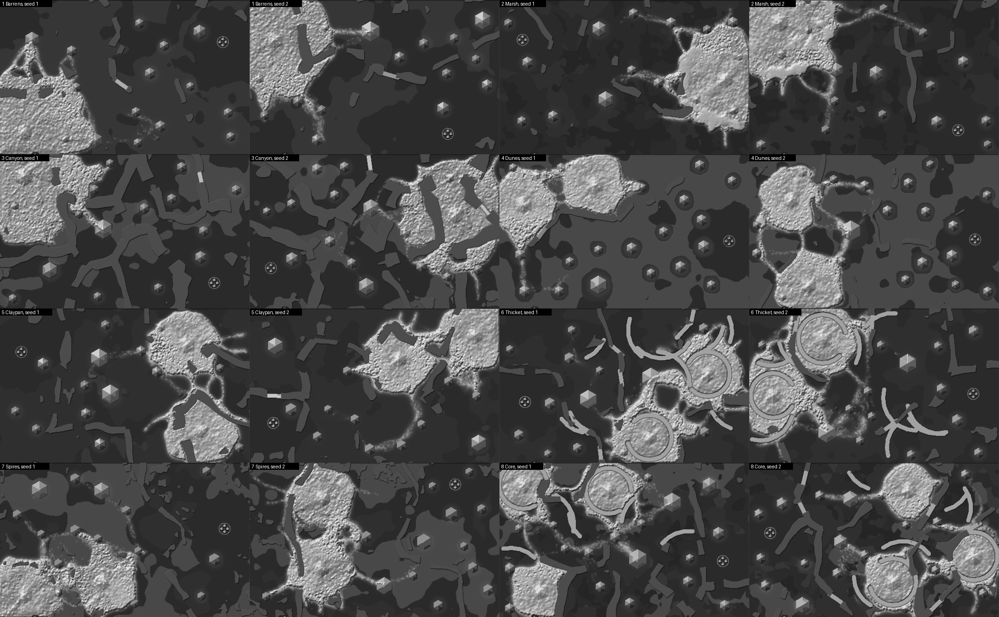
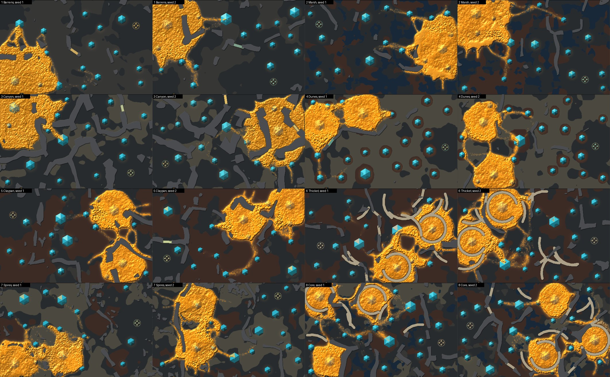

The roguelike's eight generated planets from PR #277 (branch at 9bb43c8), two seeds each, whole map at 0:10 with nobody playing. Software Vulkan, 1280 × 800 window, shrunk here. The level generation thread's own page has the two-minute films.
The test: a planet's biome should be clear from a small grey thumbnail, before you read its name.

Barrens, Canyon, Claypan and Spires are all dark ground with mid-grey patches and short grey sticks. Marsh's water has the same brightness as the ground. Only Dunes, and Thicket and Core with their rings, stand apart.
Layout: level generation thread. Ground materials: terrain thread.

Barrens on planet 1 does read as plain ground; the bands and the ash material fix that.
Kept: the nests, the crystals (cyan hexagons on every planet) and the landing marker read well.